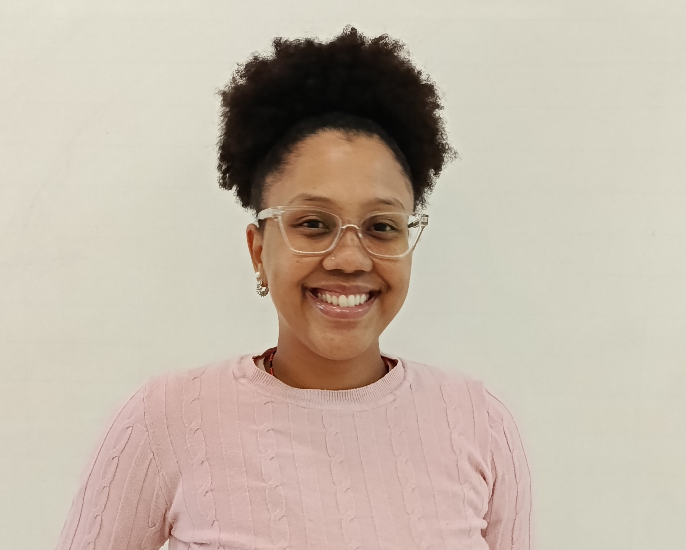

Recepção
Conheça as histórias das mulheres que fazem parte da recepção.

Fabiana
Minha trajetória
Fabiana Aparecida Marcelo Nunes trabalha há 17 anos no SESI como inspetora de alunos, uma função que começou a despertar seu interesse ainda na infância, quando ela própria era estudante da instituição. Ao observar os funcionários e professores, ficou encantada com o ambiente escolar e começou a ajudar na organização das salas de aula. Foi assim que nasceu sua vontade de trabalhar em uma escola. Antes de chegar ao SESI, passou por outras três escolas, mas foi na instituição onde estudou que construiu sua carreira como inspetora. Ela conta que sempre quis estar perto da educação e fazer parte daquele ambiente, mesmo que sua função não fosse dentro da sala de aula. Sobre seu trabalho, Fabiana afirma que gosta de tudo e que é uma pessoa que vai feliz trabalhar. Sua função envolve acompanhar os alunos e estar presente em diferentes espaços da escola, desde a entrada até a saída dos estudantes. Ela explica que muitas pessoas não percebem a importância de suas atividades e, às vezes, interpretam suas rondas pela escola como se ela estivesse apenas passeando. No entanto, como ela mesma esclarece, caminhar pelos espaços faz parte de seu trabalho, pois precisa observar o que acontece e acompanhar a rotina escolar. Durante sua trajetória, Fabiana enfrentou situações difíceis, entre elas um episódio envolvendo uma criança que chegou até ela com machucados e que sofria violência. Diante da situação, precisou acionar a escola para que o Conselho Tutelar fosse comunicado. Ela considera essa uma das experiências mais pesadas de sua carreira, mostrando como o trabalho de uma inspetora também envolve atenção, responsabilidade e cuidado com a segurança e o bem-estar dos estudantes. Ao olhar para sua trajetória, conta que gostaria de ter aproveitado mais os incentivos que recebeu para estudar, pois acredita que isso poderia ter mudado seus caminhos profissionais. Entre as experiências mais marcantes, Fabiana relembra ter sido homenageada por alunos do SESI, algo que a fez se sentir importante e reconhecida. Ela também se orgulha dos vínculos que construiu com os estudantes, inclusive com aqueles que já terminaram o ensino médio. Alguns continuam mantendo contato, convidam-na para passeios, churrascos e até casamentos. Para ela, é muito especial perceber que sua presença continua fazendo parte da vida dos alunos mesmo depois que deixam a escola. Ao falar sobre suas inspirações, Fabiana conta que sua história de vida foi diferente de uma infância familiar tradicional e que, por isso, sua maior inspiração é ela mesma. Ela relata que foi mãe muito cedo e precisou lutar sozinha, reconhecendo a própria força e superação ao longo da vida. Sua trajetória demonstra como enfrentou dificuldades e construiu seu caminho, encontrando na educação e no trabalho uma forma de participar da vida de outras pessoas. Para os jovens que estão começando a construir suas trajetórias, Fabiana deixa um conselho: estudar, manter o foco e levar a educação a sério, não apenas pela vida profissional, mas também pela vida familiar e pelas oportunidades futuras. Ela ressalta que aquilo que hoje pode parecer apenas um trabalho escolar pode fazer diferença no futuro e que estudar e aproveitar as oportunidades oferecidas pelo SESI e pelo SENAI pode representar um diferencial na vida dos estudantes. Sua história mostra a importância de estar presente na comunidade escolar, de valorizar os vínculos construídos com os alunos e de reconhecer a própria capacidade de superar desafios.

Gabriela
Minha trajetória
Gabriela atua como inspetora no setor da Educação e possui cerca de cinco anos de trajetória na instituição, contando desde o período em que começou como estagiária. Depois do estágio, trabalhou em um berçário e, posteriormente, foi chamada para cobrir uma profissional, permanecendo na instituição. Seu trabalho é fundamental para o ambiente escolar, pois envolve acompanhar os alunos, cuidar da organização e verificar se tudo está bem, contribuindo principalmente para a segurança e o bem-estar dos estudantes. Gabriela destaca que a rotina de uma inspetora é bastante corrida e que muitas vezes as pessoas não percebem a importância e a quantidade de responsabilidades envolvidas nessa função. Entre os desafios de sua trajetória, um dos mais marcantes foi cuidar de seu pai durante a pandemia. Profissionalmente, uma de suas maiores conquistas foi conseguir trabalhar no SESI, algo que sempre desejou. Ela também se emocionou ao acompanhar um estudante que conseguiu passar em uma faculdade de outro país, uma conquista que considerou muito especial. Para Gabriela, trabalhar com educação é algo muito importante e representa muito em sua vida. Ela encontra motivação em seus sonhos e nos objetivos que deseja alcançar. Sua mãe é a mulher que mais a inspira e representa uma grande referência em sua vida. Sua presença contribui para tornar a escola um ambiente mais seguro, organizado e acolhedor para alunos e profissionais. Por sua dedicação, responsabilidade e pelo trabalho que realiza diariamente, Gabriela merece ser reconhecida e valorizada como uma das mulheres que contribuem para a construção da comunidade escolar. Uma de suas mensagens para os estudantes resume a importância que ela dá à educação: “Estudem sempre. Nunca parem de estudar.”

Bárbara
Minha trajetória
Bárbara Yara de Castro Alves trabalha como inspetora de alunos no SESI, onde está há cerca de quatro ou cinco meses. Sua relação com a instituição, porém, começou muito antes de sua trajetória profissional: ela estudou no SESI durante toda a vida e desenvolveu um carinho especial pela rede. Antes de chegar à escola atual, trabalhou em uma escola pública de Valinhos como cuidadora de uma criança atípica, experiência que despertou seu interesse pela área da educação. Após um período afastada por motivos pessoais, encontrou a oportunidade de trabalhar novamente no ambiente escolar e decidiu assumir a função de inspetora. Em seu trabalho, Bárbara é responsável por acompanhar e cuidar dos alunos em diferentes momentos da rotina, como a entrada, a saída e os intervalos. Também auxilia os professores, oferece apoio aos estudantes quando necessário e colabora com a gestão escolar. Ela gosta especialmente de estar com as crianças, dos colegas e do ambiente da escola. Para ela, o cuidado com os alunos é uma parte essencial de seu trabalho e está presente em tudo o que faz durante o dia. Um dos desafios que Bárbara identifica em sua profissão é trabalhar com pessoas. A convivência exige atenção, responsabilidade e cuidado com aquilo que é dito e compartilhado, já que nem todas as situações podem ser expostas. Além disso, ela destaca que o trabalho da inspeção nem sempre é percebido por quem acompanha a rotina escolar. Mesmo quando parece que os inspetores estão apenas circulando pela escola, estão constantemente realizando alguma atividade e cuidando para que os alunos tenham o suporte necessário. Entre suas maiores conquistas, Bárbara destaca a construção de sua família, a conquista da própria casa e do carro, além da possibilidade de oferecer uma boa educação aos filhos. Ela sente orgulho de toda a sua trajetória e valoriza tanto suas realizações pessoais quanto o caminho que percorreu até chegar ao trabalho que exerce atualmente. Sua maior inspiração é sua mãe, Eliane, que ocupa um lugar importante em sua vida. Bárbara também reconhece que sua presença na escola pode representar uma referência de cuidado e acolhimento para os estudantes. Ela percebe que os alunos, tanto meninas quanto meninos, podem se sentir confortáveis para conversar com as inspetoras, que acabam assumindo, em alguns momentos, uma imagem materna dentro do ambiente escolar. Para os estudantes, Bárbara deixa um conselho simples e importante: estudar bastante, buscar a formação na área com que sonham e não desistir de seus objetivos. Ela também gostaria que a comunidade escolar apoiasse os alunos e valorizasse sua trajetória, reconhecendo a importância de oferecer incentivo e cuidado durante a formação de cada um.